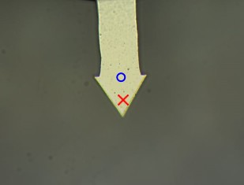

设置测量
样品安装和对焦
选择适当的AFM配置。
确保磁力固定的悬臂梁臂已移除。
对焦样品
使用AFM物镜并搜索感兴趣的区域。
可选：将
显微镜Z用户位置
设为零作为参考。
悬臂梁安装
将显微镜向上移动至少1500 µm。
将悬臂梁（粘在垫圈上）安装到悬臂梁臂上，并将其安装到惯性驱动器上。（如有必要：连接悬臂梁臂的电缆。）
通过轻轻移动惯性驱动器的底部在X、Y和Z方向上手动定位悬臂梁，直到悬臂梁在视频图像中可见。
将显微镜向下移动，距离样品表面不近于100 µm。（悬臂梁必须在样品上方2000 µm以内才能进行自动探针逼近。）
调整
点击
开始调整
在
调整
区域。按照
消息窗口
中显示的步骤操作（完成一步后按
下一步
）。注意
–
大多数步骤都包含有用的提示：
如图1所示将悬臂梁定位在光束下方：
悬臂梁控制
会自动打开。
激活
显示悬臂梁位置
，通过选择
设置探针位置
在
菜单
中将十字标记放到假定的探针位置。确认补偿。
如果光束不可见，蓝色圆圈标记其位置。可能需要减少照明才能看到光束。
如果悬臂梁倾斜超过约10°，则应重新安装悬臂梁。
将光束斑点居中到四象限二极管上：
使用光束偏转单元上的T-B和L-R调节螺钉。
在
AFM状态
中观察绿点的变化。
如果点在一个边缘，观察Sum信号（右侧的条形）。如果螺钉朝正确方向转动，它会增加。
进一步的调整请参见相应的AFM模式（
接触模式
、
AC模式
、
DPFM
）。
检查
P增益
和
I增益
。（5对两者来说都是良好的起始值。）

图1：悬臂梁在视频图像中的适当位置。
逼近和测量
点击
开始逼近
。
开始测量。
更多信息：
调整
、
反馈设置
、
探针逼近
提示
如果在接触过程中听到台子的噪音，说明反馈过于激进。立即降低I增益和P增益，直到噪音停止。
P增益和I增益值过低会导致对形貌变化的响应缓慢。
P增益和I增益值过高会导致振荡。
较高的P增益和I增益值会导致更精确的形貌记录。
I增益会导致更激进的响应，在大多数情况下略低于P增益。
更多信息可在
PI控制器
下找到。